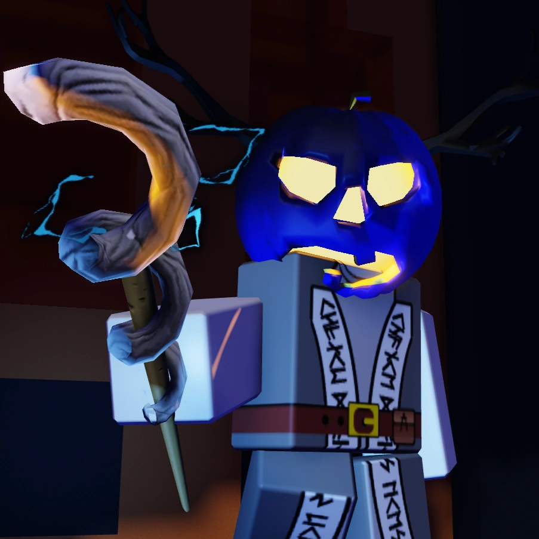
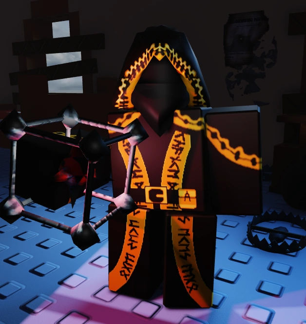

|
Noob |
Unbothered. Innocuous. Full of whimsy and joy. - 100Hp |
Free |
Bloxy Cola-Keybind Q
Noob carries two Bloxy Colas. Drinking one grants Speed I for 10 seconds and removes all existing slowness effects. While drinking, Noob cannot sprint and has 10% less speed. |
Slateskin Potion-Keybind E
Noob carries two Slateskin Potions. Drinking one grants Slateskin II for 6 seconds, providing 80 overheal but slowing them by 45%. If Slateskin wears off naturally, Noob gains Speed II for 2 seconds. While drinking, Noob has 40% less speed and cannot sprint. |
Ghostburger-Keybind R-Cooldown 45s
Noob eats a Ghostburger, gaining Undetectable II for 10 seconds and Invisibility III for 8 seconds. This makes their aura unreadable and renders them 75% transparent. While eating, Noob has 40% less speed and cannot sprint. |
N/A |
N/A |
|
Elliot |
Pizza pizza! - 80Hp |
Free |
Pizza Throw-Keybind Q-Cooldown 45s
Elliot tosses a pizza infront of him that can heal other survivors for 35 HP.
Survivors within 50 studs of Elliot while the pizza is being thrown have the pizza highlighted for 5s. These pizzas cannot heal Elliot himself, and they despawn after 25s. The healing effect of the pizzas is decreased by 15% for every other Elliot that's in-game, but caps at 80%. |
Rush Hour-Keybind E-Cooldown 30s
After Elliot heals any player, except for other Elliots, they gain a charge for this ability.
Using a charge grants Elliot Speed III for 3 seconds. Elliot starts the round with 1 charge for this ability. Max 1 charge |
N/A |
Order Up-
After any objective is contributed towards, Elliot gains a 5% increase in how much he heals.This percentage stacks, but caps at 25%. |
Deliverer's resolve-
Whenever any Survivor receives 15 or more damage, their aura becomes revealed to Elliot for 4 seconds. |
 |
Shedletsky |
Blame John - 100Hp |
Free |
Slash-Keybind Q-Cooldown 40s
Shedletsky slashes forward, dealing 30 damage and stunning the killer for 3 seconds if it hits. Upon activation, Shedletsky is given Resistance II for 0.575 seconds, alongside being slowed down by 75% for 1.575 seconds. |
Fried Chicken-Keybind E-Cooldown 70s
Shedletsky pulls out a piece of fried chicken and takes a bite out of it, immediately restoring 5 HP and 35 HP across the span of 10 seconds.
If Shedletsky is hit at any point, the regeneration is cancelled. This ability only has two charges before becoming unusable. |
N/A |
N/A |
N/A |
|
OO7n7 |
all your base are belong 2 me - 100Hp |
500$ |
Clone-Keybind Q-Cooldown 27s
When activated, 007n7 taps into his exploits to create a clone of himself that lives for 10s before dying. Upon creating a clone, 007n7 is given Invisibility IV and Undetectable I for 4 seconds. If 007n7 touches their clone after 2 seconds of it being created, the clone will immediately die and 007n7 will be given Weakness II for 4 seconds.
The clone, by default, will wander aimlessly, but this can be changed through using the Inject ability (see below). (007n7's clone's aura will be white.) |
c00lgui-Keybind E-Cooldown 50s
007n7 stays in place for 6 seconds before teleporting away to the furthest survivor spawn location from him.
Being hit and/or starting a generator repair cancels it immediately, and the player will need to wait for the 50s cooldown to end for the ability to be used again. |
Inject-Keybind R-Cooldown 0
Upon activation, the clones created using 007n7's Clone ability will have their movement type switched.(This will not change the current clone's movement type if there is one.)
- Aimless Wandering: The clone wanders around randomly & aimlessly.
- Pathfinding: The clone pathfinds to the furthest survivor spawn.
- Cursor: The clone moves towards the player's cursor. On mobile, the clone will instead run in the direction the player is facing, so using shiftlock is not advised.
|
Dex-
007n7 will always be able to see the location of the furthest survivor spawn from him.
|
N/A |
 |
Two time |
Shadows die twice - 80Hp |
500$ |
Sacrificial Dagger-Keybind Q-Cooldown 30s
After a 0.3s windup, you'll stab your dagger forward and gain Resistance III for 0.7 seconds with a very slight lunge.
If it hits the killer in the front, it'll deal 25 damage, apply slowness II, helpless I to the killer both for 2s and heal two time for 10.
However, if it hits the killer's back (the dagger will have a unique startup animation for feedback, along with Two Time smirking if you're in the correct position to do this) it stuns for 4s, does 35 damage, and heals two time for 20. |
Crouch-Keybind E-Cooldown 35-50s
Crouch down, reducing your movement speed to 9 (15 when sprinting) and become undetectable and invisible.
When exiting, you get slowness depending on distance from killer, cool down increases with time crouching. You can stab out of a crouch. Undetectable and Invisibility last 15s and so does crouch itself. |
Ritual-Keybind R-Cooldown N/A
Carve the respawn symbol into the ground with your dagger. This symbol emits a faint glow. This animation is when activating the power (Ritual).
This is where you'll respawn. When dying to the killer with your respawn ready, the timer won't increase, and you'll respawn, being highlighted to the killer for 2s after respawning. You gain full immunity to status effects and damage for 2s after respawning. You do not need to fill the oblation bar to enter the second life when you're in LMS
|
Oblation-
Two Time now has a oblation bar in the side of the screen that only the user can see. This bar appears upon dealing damage. Filling this bar grants the player their second life, however to do so, you'll have to deal 70 damage to fill it. Stats change when respawning, making Two Time have 40 HP. Two Time is also granted Speed II for 6 seconds and Weakness V for 12 seconds when respawning.
Upon entering LMS if this second life has not been used, instead gain (Bar% x 30-40) additional MaxHealth and Health.
|
N/A |
|
Builderman |
Welcome to ROBLOX! - 90Hp |
500$ |
Sentry Construction-Keybind Q-Cooldown 45s
Builderman receives Weakness I for 2 seconds and takes 6 seconds to construct a Sentry infront of him.
Sentries have 30 Health and target nearby killers, dealing damage and inflicting Slowness II for 1 second. If Builderman is damaged while building a Sentry, it will be destroyed and the ability will be cancelled.
Builderman can only have 1 Sentry active at once, and will destroy any previously active Sentry you placed. Sentries have a target range of 32.5 studs, which decreases by 16% for every additional Sentry currently active. Sentry target range cannot go below 8 studs. |
Dispenser Construction-Keybind E-Cooldown 45s
Builderman receives Weakness I for 2 seconds and takes 6 seconds to construct a Dispenser infront of him.
Dispensers have 15 Health and heal in a 16 stud radius. If Builderman is damaged while building a Dispenser, it will be destroyed and the ability will be cancelled.
Builderman can only have 1 Dispenser active at once, and will destroy any previously active Dispenser you placed. Dispensers heal 1HP/s, which decreases by 8% for every additional Dispenser currently active. Dispenser heal amount cannot go below 0.3HP/s. |
N/A |
N/A |
N/A |
|
Guest1337 |
Be strong. Always be strong. - 115Hp |
500$ |
Block-Keybind Q-Cooldown 24s
Guest 1337 braces for impact, applying Resistance V (aka Invincibility) for 1s and has their movement speed reduced by 80% for 2s. Upon successfully blocking an attack, Guest 1337 has their movement speed restored, their Resistance status removed, and is given Speed I for 3s. Successful blocks restore a charge for Guest 1337's Punch ability.
Projectiles CANNOT be blocked though resistance is still aplied. |
Punch-Keybind R-Cooldown 3s
Guest 1337 winds up his fist for 0.8s and punches forward, stunning any killer within range of his punch for 2s. If this ability is used within 1s of a successful block, then it becomes a Parry.
Parried punches have a windup time of 0.625s, and stun the killer for 3.5s. |
Charge-Keybinde E-Cooldown 45s
Guest 1337 dashes forward in a shoulder-bash pose for 1.5s. If Guest 1337 collides with the killer during his charge, then the killer is knocked back and has their abilities locked for 1.25s. Guest 1337 also becomes invincible for 1.25s.
If Guest 1337 charges into a killer whom was already charged into 10 seconds prior, they will take 15 damage and the charge's effects will be nullified. Not landing a charge on an enemy inflicts Slowness II that lasts for 3 times Guest 1337's distance from the nearest killer divided by 13. Charge ends automatically if you crash into a wall.
|
Made to last
Guest 1337 has hit priority over other survivors & buildings.
|
N/A |
|  |
Dusekkar |
"Destiny's powerful hand has made the bed of my future, and it's up to me to lie in it." - 90Hp |
600$ |
Spawn Protection-Keybind Q-Cooldown 35s
Dusekkar casts a protective shield on an ally for up to 8 seconds with a range of up to inf Studs (intended to be 275), granting the ally with Resistance IV and inflicting the Dusekkar with 8 seconds of Slowness I along with further slowing them and disabling their ability to sprint while casting.
To maintain the shield, you must keep your cursor on the ally at all times; otherwise, it will disappear. If line of sight is broken for 2 seconds, the shield will also break. |
Plasma Beam-Keybind E-Cooldown 20s
Dusekkar spins their staff with their hand for 2 seconds before shooting a beam from it with a range of up to 125 Studs.
This slows down Dusekkar while casting, Hitting a killer with the beam will give them Slowness II for 3 seconds
Hitting a survivor with the beam will give them Speed I for a 4 seconds.
For each other Dusekkar alive, this duration is reduced by 0.5 Seconds. |
N/A |
Levitate-
Your Footsteps don't make sound
|
N/A |
|  |
Taph |
BOOM BOOM BOOM! - 90Hp |
600$ |
Tripwire-Keybind Q-Cooldown 25s
Taph places a tripwire on the ground in order to weaken the killer and alert other survivors about their presence. There is a limit of 3 tripwires for each Taph. If a Taph attempt to place another tripwires after reaching the limit, the first one will disappear similar to John doe's Digital Footprint.
When the killer walks over a tripwire, all survivors within 100 studs of Taph have the killer's aura revealed for 8 seconds and the killer gains Slowness II for 4 seconds. |
Tripmine-Keybind E-Cooldown 40s
Taph arms a Subspace Tripmine and throws it on the ground in front of himself. The tripmine will go semi-invisible after placing. The tripmine will slightly reveal itself every 13 seconds.
When the killer gets within 16 studs of it, it detonates after 0.5 seconds, and they get Helpless I for 3 seconds and Subspaced III making the killer's vision have a very dark pinkish filter for 5 seconds and forcing their camera/screen in a certain direction.
If Taph is surrounding the Subspace Tripmine as it explodes, he will get Subspaced III as well. |
N/A |
N/A |
N/A |
|
Chance |
99% of gamblers quit right before they win big - 50-130Hp |
777$ |
One Shot-Keybind E-Cooldown 40s
Chance pulls out an unreliable flintlock, and after a windup of 1s, pulls the trigger.
- (25 - 15 - 5% chance) The flintlock explodes, dealing 45 damage to the user & disabling the ability indefinitely until it's repaired using Hat Fix.
- (25 - 15 - 5% chance) The flintlock won't go off and will force the user to wait.
- (50 - 70 - 90% chance) The flintlock fires, stunning any killer that gets shot at within 90 studs for 1-4 seconds. The shot linearly becomes less effective depending on how far away Chance is from the killer.
For each additional charge One Shot has, (i.e. having 2 or 3 charges) the chance of a successful shot increases by 20% and the chance of all other outcomes decrease by 10%. This ability starts off with 0 charges and has a cap of 3 charges. Using this ability removes the charges of all other abilities. |
Reroll-Keybind R-Cooldown 20s
Chance rerolls the value of his Max Health.
Max Health becomes a value from 50 to 130. The health stat, after rerolled will increase by 3% for every charge this ability has.
This ability starts off with 0 charges and has a cap of 3 charges (higher health change the more charges). Using this ability removes the charges of all other abilities. This doesn't heal if the current health is less than the max health. |
Hat Fix-Keybinde T-Cooldown 60s
Upon activating this ability, all Weakness stacks that were inflicted onto you through using Coin Flip are reverted back to Weakness I.
It will also remove any present Weakness debuffs.
This ability can only be used after reaching 3 charges for all other abilities.
Using this ability removes all charges on every ability & repairs Chance's gun ability if it blew up.
|
Unpredictable Fate
Chance's inicial Max HP stat is set to be a random value of 70-90
|
Chance's Favor-Keybind Q-Cooldown 0.5
Chance flips a coin.
If the coin lands on heads, gain a charge for all other abilities.
If the coin lands on tails, gain a stack of Weakness for 15 seconds.
For every time the coin lands on tails, the level of Weakness that gets inflicted on you goes up by I. The Weakness that gets inflicted has no cap.
|